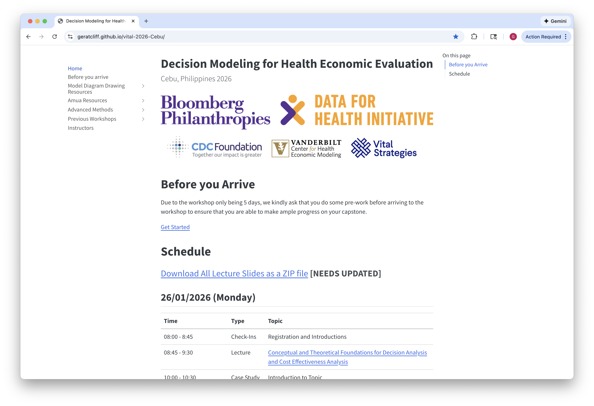
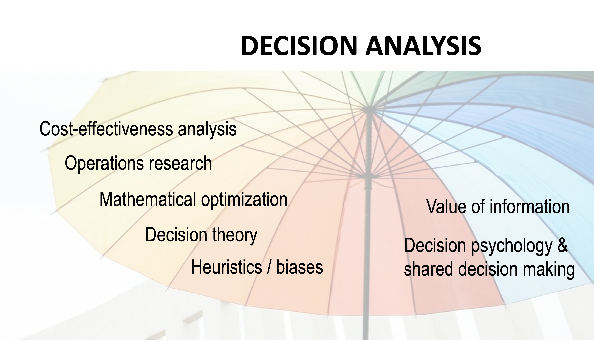
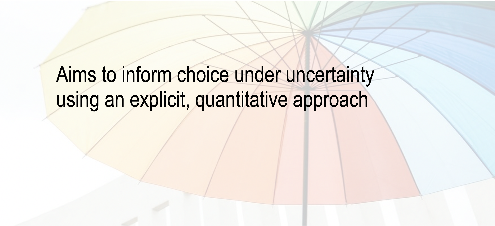
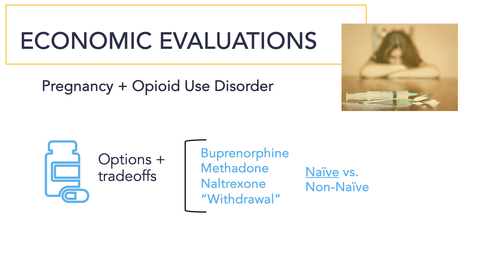
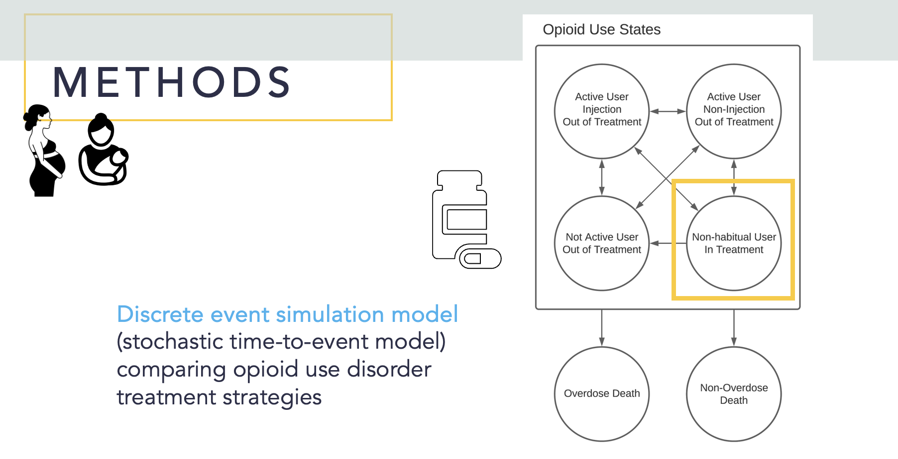
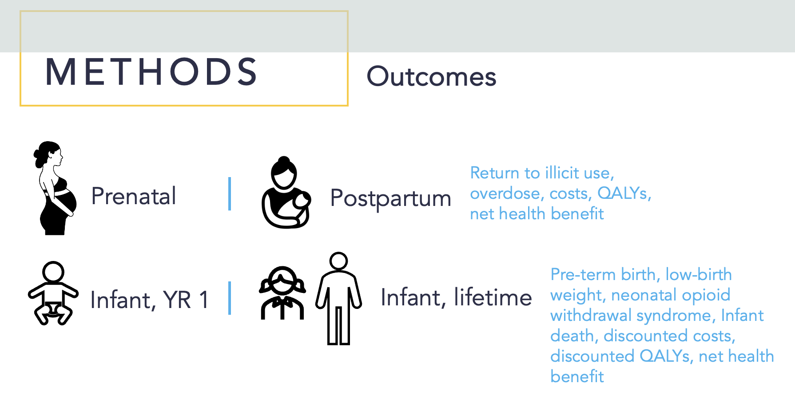
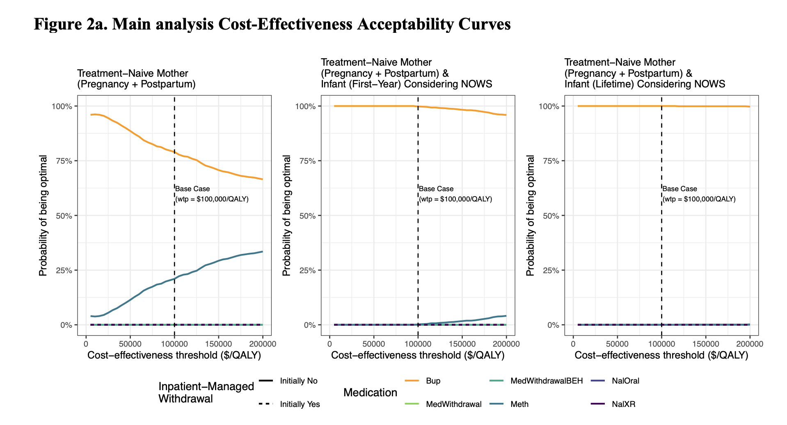

Introductions
Introduction to Decision Analysis
Outline
01
02
Motivation
03
Examples of Decision Analysis
04
Workshop objectives
Course Website
What is it?
All course materials (slides, case studies) are posted here.
Our (likely evolving) schedule will also be posted here, and updated regularly.
Additional Resources (Quick Start Guide, Data Collection Tool, Etc.)

Introductions
01
Motivation
02
The Past Two Decades …
- Cured Hepatitis C
- Significantly reduced incidence of HIV
- Potential cure for relapsed/refractory leukemia & lymphoma
- Perfected vaccines (e.g. HPV vaccine) to prevent diseases such as cervical & other cancers
- Strides in preventing cardiovascular disease
Despite these advances …
74%
of deaths globally are from non-communicable diseases.
86% of those deaths are in low- and middle-income countries (LMICs) Burden of NCDs like cancer, cardiovascular disease, and diabetes is growing.
Source: WHO
Governments cannot afford all the healthcare from which people could possibly benefit
Either implicitly or explicitly, we make choices about which programs to fund, which populations to screen, and which expensive new drugs to provide to which patients
Decision Analysis can help us ensure that we prioritize the highest value care possible at an efficient price point
Decision Analysis
a methodology that is uniquely beneficial when there are meaningful tradeoffs between healthcare interventions, but the best strategies for obtaining optimal outcomes are uncertain.
Example:
The introduction of a new drug provides hope at more survival and better quality of life. However, based on the high cost it is unknown if the new drug is worth implementing over the current drug.


Value
Economists have long defined value as “outcomes relative to costs
If we only consider benefits when we define value, it’s no different than efficacy or effectiveness research.
But, we do NOT want to just consider costs without benefits!
Examples of Decision Analysis
03
Ex 1. HIV
You have been appointed as Director of a funding allocation committee responsible for prevention & treatment initiatives for HIV.
How will the committee decide on the proportion of funds for prevention efforts versus treatment?
Should any of the funds be used for research?
How do you respond to a member who argues that the funds are better spent on childhood vaccinations?
Ex 2. Birth Defects
A hypothetical birth defect…
1 in 1,000
children
are born with it
50%
fatality rate
unless treated
Ex 2. Birth Defects
Should we test for this hypothetical birth defect?
Diagnostic test: Perfectly accurate
All newborns in whom the defect is identified can be successfully cured
The test itself can be lethal 4 in every 10,000 infants tested will die as a direct and observable result of the testing procedure
Ex 2. Birth Defects
Objective: Minimize total expected deaths
Consider a population of 100,000 newborns
Testing
Produces: (0.0004 x 100,000) = 40 expected deaths
✓ Fewer deaths
No testing
Produces: (0.001 x 0.5 x 100,000) = 50 expected deaths
- Anyone got a problem with this??
Different lives are lost
Testing
Virtually all 40 deaths occur in infants born without the fatal condition
No testing
All 50 expected deaths occur from “natural causes” (i.e. unpreventable birth defect)
Different lives are lost
- “Innocent deaths” inflicted on children who had “nothing to gain” from testing program
- We may treat one child’s death as more tolerable than some other’s – even when we have no way, before the fact, of distinguishing one infant from the other.
Ex 3. Substance use treatment in pregnancy
Another example of “Competing interests”
[Leech AA, 2024]

Ex 3. Opioid/substance use in pregnancy
[Leech AA, 2024]

Ex 3. Opioid/substance use in pregnancy
[Leech AA, 2024]

Ex 3. Opioid/substance use in pregnancy
[Leech AA, 2024]

Ex 3. Opioid/substance use in pregnancy
The clear winner is buprenorphine!!
Yes, BUT…
- We know that clinically, patient choice is really important for retention outcomes
- We can also see that our final conclusions are driven by the infant outcomes (methadone actually has better retention outcomes)
- We did not simulate the birthing parent over their lifetime
The appropriate balance of competing interests between the pregnant individual and the infant is an ethical exercise that is beyond the scope of simulation modeling.
Ex 3. Opioid/substance use in pregnancy
Even if buprenorphine is “dominating” in the parlance of decision science and health economics. Requiring this treatment creates poor policy with…
Reduced Retention
Worse Outcomes
Higher Cost
…than allowing individuals to CHOOSE their preferred option.
Estimating probabilities is fundamental to decision making
- Cannot readily obtain needed probabilities
- Varying time periods / lengths
- Methods to estimate probabilities
Commonality of cases
- Unavoidable tradeoffs
- Different perspectives may lead to different conclusions
- Multiple competing objectives
- Complexity
- Uncertainty
Key Takeaways
Decision Analysis
- Aims to inform choice under uncertainty using an explicit, quantitative approach
- Aims to identify, measure, & value the consequences of decisions under uncertainty when a decision needs to be made, most appropriately over time.
Workshop objectives
04
Workshop Design
- We’re flexible – if there is a topic that is unclear to you, or that you would like expanded upon, please let us know!
2. Mixed content
Lectures
Small group case studies
Large group case studies and “hands-on” Amua exercises
Time for Capstone work and guidance
Workshop Content
Day 1
Basics of decision analysis
Decision trees
Introduction to Amua
Introduction to Capstone
Days 2-3
Basics of Cost-Effectiveness Analysis
Valuing cost and health outcomes
Incremental cost-effectiveness analysis
Introduction to Markov Modeling
Day 4-5
Advanced Topic Preview
Risk Matrix
Progressive Disease
Sensitivity Analysis
Common CEA Errors
DALYs in Amua
Questions?
Next: Decision Trees